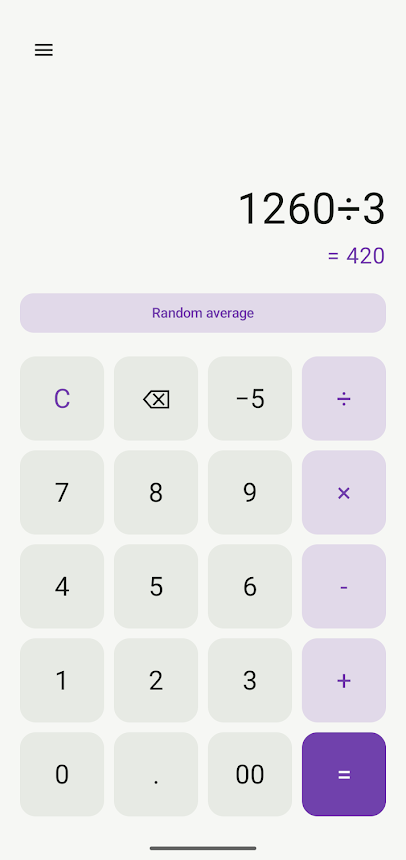
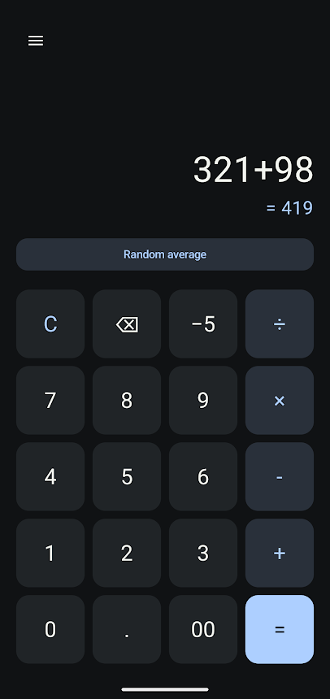

Culator v2.0
Download APK (8.2mb) Source codeCulator v2.0 is a native android version of the culator web app. It was 100% vibe-coded and took 0% human creativity to create.
Fun facts:
- It was created in about 15 minutes.
- It took 6 seperate prompts, although the latter 5 were minor changes.
- In those 15 minutes, the language model (GPT-6 Astra) consumed roughly 5 kWh of electricity*, which is equivalent to running a 1,000w microwave for 5 hours.
- 10 litres of clean drinking water were used to cool the massive eyesore of a datacenter that ran the model**


* This is a rough estimate based on the average energy consumption of large language models. The actual energy consumption may vary depending on the specific model and hardware used.
** This is a rough estimate based on the average water consumption of large datacenters. The actual water consumption may vary depending on the specific datacenter and cooling methods used.